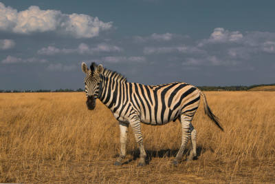

Zebra
As listras de cada zebra são tão únicas quanto as impressões digitais humanas.
As listras confundem predadores, dificultando a identificação de uma zebra no grupo.
Zebras emitem vocalizações parecidas com latidos para alertar sobre perigos.
Frequentemente convivem com gnus e antílopes, ajudando na detecção de predadores.
Na Roma Antiga, eram chamadas de "cavalos tigres" e exibidas em arenas.
As listras ajudam a regular a temperatura corporal em climas quentes.